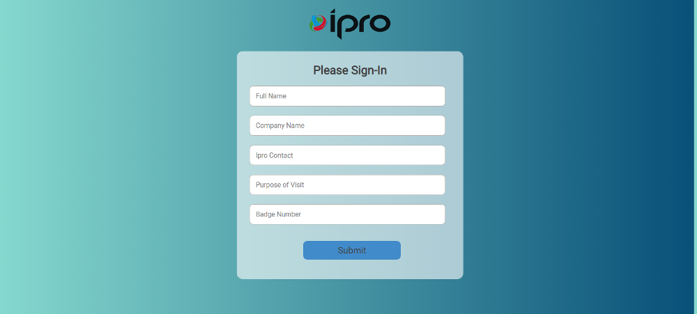
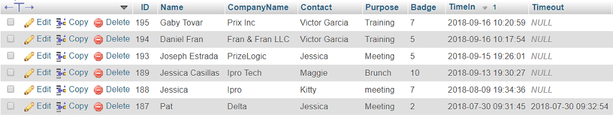
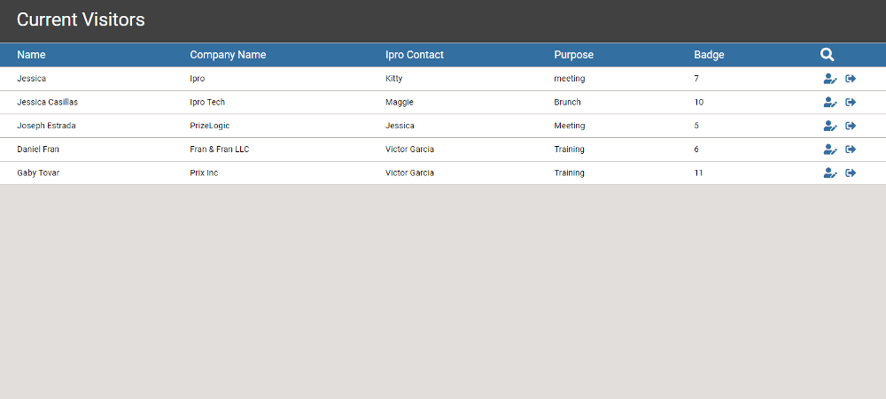
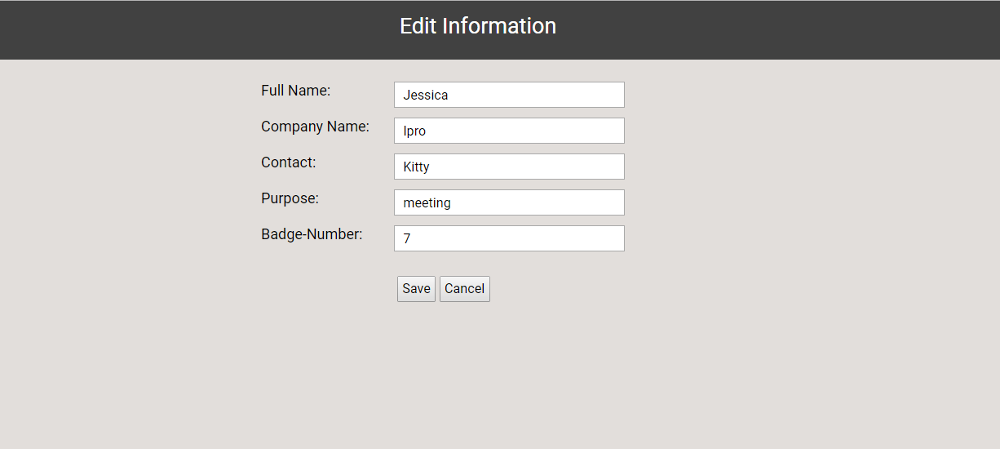
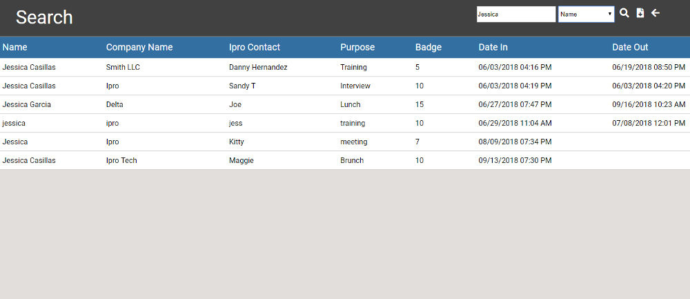

Ipro had office visitors sign in to the office with pen and paper. Once a month, the receptionist would compile all the sign in sheets and manually enter the visitor information to an excel spreadsheet. The paper slips would then get stored in a filing cabinet. When I first learned of this outdated practice, I knew I wanted to create something that would help the company save on both supplies and labor. For the next six months I made it my mission to build something that would help automate this process.
Since Ipro had some web applications built in PHP already, I decided to build my visitor app using PHP, MySQL, and HTML5. I had never used PHP or MySQL in the past but I knew some basic programming concepts which helped me take on the project. I pitched my idea to a few members of the company and they asked that my web-application include the following.
This is what the visitor will view when they arrive to our office and are asked to sign in. My idea was to have them use a tablet connected to our network to sign in. I made the design based on an average tablet size of 768 x 1024.
When the visitor clicks on submit, the information is time stamped and sent to our MySQL database. The visitor gets a confirmation that the form was submitted and the page refreshes, ready for the next visitor to sign-in. Below is a quick glimpse of how the information is structured in our MySQL database.
The receptionist has access to view current visitors in the office. This page also allows the receptionist to manage the visitors and the information they’ve entered.
If the edit icon is selected, we are redirected to the edit page where the receptionist is able to edit the information our visitors submitted. When the record is saved, all of the updates will be sent to the database. We will then be taken back to the Current Visitors view.
Once a visitor leaves the office, the receptionists is able to sign them out by clicking on the sign out icon . By signing them out, a time-stamp gets applied to the TimeOut column. Since the Current Visitors page is only displaying information where Time-Out is null, the visitor’s information disappears from the Current Visitors page. The receptionist also has the option to conduct searches to the database. This can be done by clicking on the search icon in the Current Visitors page. This action will take us to the search page.
The search page allows the receptionist to type a keyword and search by the database columns. Once the receptionists clicks on the search icon , the results for the search keyword get returned. The receptionist will now have the option to conduct another search or export the current results as a CSV file. If the export icon is selected, the file will automatically get downloaded and saved to the downloads file on the PC. The back icon will return the receptionist to the Current Visitors page.
This project was one of my favorites to build. Learning a new programming language on the fly taught me a lot of researching and troubleshooting techniques. This application is currently being utilized by Ipro. Please visit my Github where you’ll find the source code for this project.